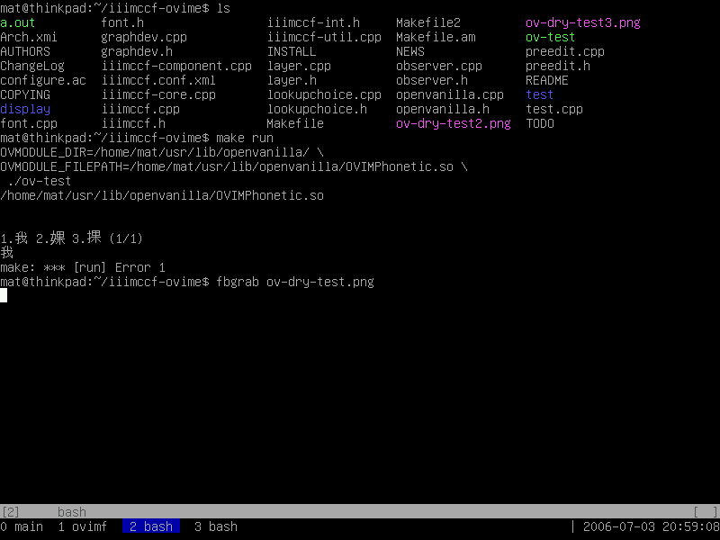
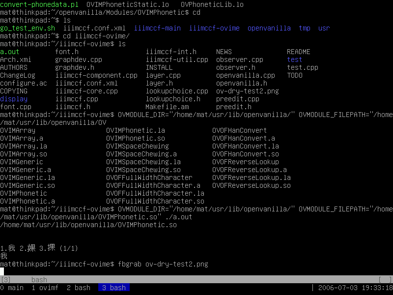
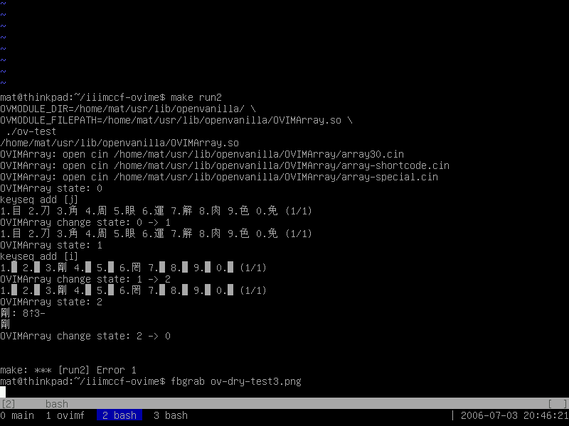

歡迎+感謝任何的Bug Report或建議到我的信箱, 不過我可能沒辦法馬上回應. 因為...我又要收假了 orz
Email: MatLinuxer2@gmail.com
緣起
小弟常常在 console 弄東弄西，然而在 console 下遇到中文處理，總是一個頭兩個大。
為此，我一直尋找一個完整的 Unicode console enviroment 的解決方案，感謝先人的努力，
已經有 fbiterm、jfbterm、... 等 Unicode 的 console applications。然而，
輸入法的支援上一直是一個缺憾，於是我開始著手嘗試將 IIIMF 的架構引入 console，
也就是你現在看到的專案。
目前這個專案還在發展當中，如你有任何想法與建議，歡迎與我聯絡：
Email: MatLinuxer2@gmail.com
取得方式：
- 取得開發中的最新程式碼，請安裝 Subversion，並確保 https 連線正常。在終端機下輸入以下指令：
svn co https://svn.csie.net/iiimtcf
編譯方式：
- 請先安裝好 iiimcf 和 iiimsf 等套件，以提供 IIIMF 的支援
- ./autogen.sh (只有從 Subversion 取出的開發版本需要)
- ./configure --help 查看編譯選項，因為功能持續開發中，項目隨時可能增減
- ./configure [編譯選項，請參閱上行]
- make ; make install
測試方式
- 先安裝 lib，然後再安裝 fbiterm
- 字型的路徑在 /iterm/unix/fbiterm/src/fbiterm.h 裡，參數: DefaultMB
設計文件
There are several directories under the "iiimtcf/".
The "iiimtcf/iiimccf/" is the main source. Files there will be built to a independent module.
And "iiimtcf/iterm/" is an instance for IIIMCCF to apply.
If you are interested in this project, just try to build "iiimtcf/iiimccf/" first.
"iiimtcf/iterm/" doesn't affect the functionality of IIIMCCF, in fact.


